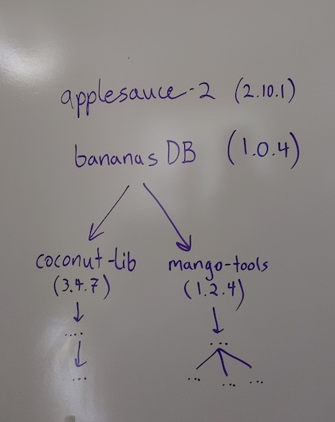

In this module, we will:
- learn about software management
- discuss package managers
- discuss conda as a software management solution
- learn how to set up conda
- learn how to create and use our own conda environments
Software Management
Software management is something that is not typically appreciated
until it is missing. In your typical day-to-day computing tasks,
software management is an automatic background process, and generally
this is how we want things to be.
When performing research computing tasks, however, you may run into
situations when this automatic background handling of software
requirements is not sufficient. You may have very specific version
requirements, or you may have disparate (or incompatible!) software
needs for different tasks.
You’ll find that the tools that we employ for software management
during research computing have some extra capabilities that make them
particularly well-suited for these use cases.
Package Managers
We likely all have some experience with software management. I’d like
to examine our experience with software management, and promote
appreciation for the work that often happens behind the scenes.

The Need for Modular Solutions
System-level software
Just one env
Poll about software incompatibility experiences
Simplifies Distribution of New Software
Cutting edge software - cutting edge dependencies
Ability to record recipe and share
If I’m developing a package, I can take these simple steps - ensures
everyone can use software
Conda
- Broad support for many types of software packages
- Across languages and platforms
- Plugable - Ability to switch between software environments at
will
- Automatically handles software requirements
- A ‘Conda recipe’ is used to list specifications
- Used during environment creation
- Can communicate requirements to others when shared
Environments
The thing that is ‘built’ by Conda and can be enabled/disabled at
will
Actual terms activate and deactivate used
in conda
Within the environment, dependencies are handled, software is made
available
Quick aside about $PATH
Packages and Channels
We start to care about these when we are creating our own conda
environments
Packages - a bunch of files (binaries, config files, etc), all
bundled up together
Conda will download various packages as described, and has a system
for storing these packages and “installing” them in an particular
location
“Install” is air-quoted - although the software is installed, it
differs from a typical software installation in that everything within
the package is contained in a special location set by Conda
Anaconda vs Miniconda
Anaconda comes pre-bundled with a plethora of common python and data
science packages. Miniconda starts out as more of a blank slate.
Conda Activate Exercise
Following along with instructor, learners will activate an existing
environment. We’ll demonstrate addition to the $PATH (and
which?)
Conda Create Exercise
Instructor will demonstrate creating a simple conda environment on
the command line.
We’ll then ask about how to create a slightly more complicated conda
environment. We’ll start a thread and learners will respond and/or vote
on the command that they would use
SRUN with Conda Create Exercise
Following along with instructor, we’ll launch an srun job and then
create a conda environment in it
SBATCH with Conda Activate Exercise
Individual exercise. Launch an SBATCH job that activates a conda
environment, checks a version of samtools and uses which to
verify its location. Inspect the job log in order to determine
success
LS0tCnRpdGxlOiAiU29mdHdhcmUgTWFuYWdlbWVudCBhbmQgQ29uZGEiCmF1dGhvcjogIlVNIEJpb2luZm9ybWF0aWNzIENvcmUiCm91dHB1dDoKICAgICAgICBodG1sX2RvY3VtZW50OgogICAgICAgICAgICBpbmNsdWRlczoKICAgICAgICAgICAgICAgIGluX2hlYWRlcjogaGVhZGVyLmh0bWwKICAgICAgICAgICAgdGhlbWU6IHBhcGVyCiAgICAgICAgICAgIHRvYzogdHJ1ZQogICAgICAgICAgICB0b2NfZGVwdGg6IDQKICAgICAgICAgICAgdG9jX2Zsb2F0OiB0cnVlCiAgICAgICAgICAgIG51bWJlcl9zZWN0aW9uczogZmFsc2UKICAgICAgICAgICAgZmlnX2NhcHRpb246IHRydWUKICAgICAgICAgICAgbWFya2Rvd246IEdGTQogICAgICAgICAgICBjb2RlX2Rvd25sb2FkOiB0cnVlCi0tLQo8c3R5bGUgdHlwZT0idGV4dC9jc3MiPgpib2R5eyAvKiBOb3JtYWwgICovCiAgICAgIGZvbnQtc2l6ZTogMTRwdDsKICB9CnByZSB7CiAgZm9udC1zaXplOiAxMnB0Cn0KPC9zdHlsZT4KCkluIHRoaXMgbW9kdWxlLCB3ZSB3aWxsOgoKKiBsZWFybiBhYm91dCBzb2Z0d2FyZSBtYW5hZ2VtZW50CiogZGlzY3VzcyBwYWNrYWdlIG1hbmFnZXJzCiogZGlzY3VzcyBjb25kYSBhcyBhIHNvZnR3YXJlIG1hbmFnZW1lbnQgc29sdXRpb24KKiBsZWFybiBob3cgdG8gc2V0IHVwIGNvbmRhCiogbGVhcm4gaG93IHRvIGNyZWF0ZSBhbmQgdXNlIG91ciBvd24gY29uZGEgZW52aXJvbm1lbnRzCgojIyBTb2Z0d2FyZSBNYW5hZ2VtZW50CgpTb2Z0d2FyZSBtYW5hZ2VtZW50IGlzIHNvbWV0aGluZyB0aGF0IGlzIG5vdCB0eXBpY2FsbHkgYXBwcmVjaWF0ZWQgdW50aWwgaXQgaXMgbWlzc2luZy4gSW4geW91ciB0eXBpY2FsIGRheS10by1kYXkgY29tcHV0aW5nIHRhc2tzLCBzb2Z0d2FyZSBtYW5hZ2VtZW50IGlzIGFuIGF1dG9tYXRpYyBiYWNrZ3JvdW5kIHByb2Nlc3MsIGFuZCBnZW5lcmFsbHkgdGhpcyBpcyBob3cgd2Ugd2FudCB0aGluZ3MgdG8gYmUuCgpXaGVuIHBlcmZvcm1pbmcgcmVzZWFyY2ggY29tcHV0aW5nIHRhc2tzLCBob3dldmVyLCB5b3UgbWF5IHJ1biBpbnRvIHNpdHVhdGlvbnMgd2hlbiB0aGlzIGF1dG9tYXRpYyBiYWNrZ3JvdW5kIGhhbmRsaW5nIG9mIHNvZnR3YXJlIHJlcXVpcmVtZW50cyBpcyBub3Qgc3VmZmljaWVudC4gWW91IG1heSBoYXZlIHZlcnkgc3BlY2lmaWMgdmVyc2lvbiByZXF1aXJlbWVudHMsIG9yIHlvdSBtYXkgaGF2ZSBkaXNwYXJhdGUgKG9yIGluY29tcGF0aWJsZSEpIHNvZnR3YXJlIG5lZWRzIGZvciBkaWZmZXJlbnQgdGFza3MuCgpZb3UnbGwgZmluZCB0aGF0IHRoZSB0b29scyB0aGF0IHdlIGVtcGxveSBmb3Igc29mdHdhcmUgbWFuYWdlbWVudCBkdXJpbmcgcmVzZWFyY2ggY29tcHV0aW5nIGhhdmUgc29tZSBleHRyYSBjYXBhYmlsaXRpZXMgdGhhdCBtYWtlIHRoZW0gcGFydGljdWxhcmx5IHdlbGwtc3VpdGVkIGZvciB0aGVzZSB1c2UgY2FzZXMuCgojIyMgUGFja2FnZSBNYW5hZ2VycwoKV2UgbGlrZWx5IGFsbCBoYXZlIHNvbWUgZXhwZXJpZW5jZSB3aXRoIHNvZnR3YXJlIG1hbmFnZW1lbnQuIEknZCBsaWtlIHRvIGV4YW1pbmUgb3VyIGV4cGVyaWVuY2Ugd2l0aCBzb2Z0d2FyZSBtYW5hZ2VtZW50LCBhbmQgcHJvbW90ZSBhcHByZWNpYXRpb24gZm9yIHRoZSB3b3JrIHRoYXQgb2Z0ZW4gaGFwcGVucyBiZWhpbmQgdGhlIHNjZW5lcy4KCiFbXShpbWFnZXMvTW9kdWxlMDRfZGVwZW5kZW5jaWVzX2xvbmdfbGlzdC5qcGcpCgoKIyMjIFRoZSBOZWVkIGZvciBNb2R1bGFyIFNvbHV0aW9ucwoKU3lzdGVtLWxldmVsIHNvZnR3YXJlCgpKdXN0IG9uZSBlbnYKClBvbGwgYWJvdXQgc29mdHdhcmUgaW5jb21wYXRpYmlsaXR5IGV4cGVyaWVuY2VzCgoKCiMjIyBTaW1wbGlmaWVzIERpc3RyaWJ1dGlvbiBvZiBOZXcgU29mdHdhcmUKCkN1dHRpbmcgZWRnZSBzb2Z0d2FyZSAtIGN1dHRpbmcgZWRnZSBkZXBlbmRlbmNpZXMKCkFiaWxpdHkgdG8gcmVjb3JkIHJlY2lwZSBhbmQgc2hhcmUKCklmIEknbSBkZXZlbG9waW5nIGEgcGFja2FnZSwgSSBjYW4gdGFrZSB0aGVzZSBzaW1wbGUgc3RlcHMgLSBlbnN1cmVzIGV2ZXJ5b25lIGNhbiB1c2Ugc29mdHdhcmUKCiMjIENvbmRhCgotIEJyb2FkIHN1cHBvcnQgZm9yIG1hbnkgdHlwZXMgb2Ygc29mdHdhcmUgcGFja2FnZXMKICAtIEFjcm9zcyBsYW5ndWFnZXMgYW5kIHBsYXRmb3JtcwotIFBsdWdhYmxlIC0gQWJpbGl0eSB0byBzd2l0Y2ggYmV0d2VlbiBzb2Z0d2FyZSBlbnZpcm9ubWVudHMgYXQgd2lsbAotIEF1dG9tYXRpY2FsbHkgaGFuZGxlcyBzb2Z0d2FyZSByZXF1aXJlbWVudHMKLSBBICdDb25kYSByZWNpcGUnIGlzIHVzZWQgdG8gbGlzdCBzcGVjaWZpY2F0aW9ucwogIC0gVXNlZCBkdXJpbmcgZW52aXJvbm1lbnQgY3JlYXRpb24KICAtIENhbiBjb21tdW5pY2F0ZSByZXF1aXJlbWVudHMgdG8gb3RoZXJzIHdoZW4gc2hhcmVkCgojIyMgRW52aXJvbm1lbnRzCgpUaGUgdGhpbmcgdGhhdCBpcyAnYnVpbHQnIGJ5IENvbmRhIGFuZCBjYW4gYmUgZW5hYmxlZC9kaXNhYmxlZCBhdCB3aWxsCgpBY3R1YWwgdGVybXMgYGFjdGl2YXRlYCBhbmQgYGRlYWN0aXZhdGVgIHVzZWQgaW4gY29uZGEKCldpdGhpbiB0aGUgZW52aXJvbm1lbnQsIGRlcGVuZGVuY2llcyBhcmUgaGFuZGxlZCwgc29mdHdhcmUgaXMgbWFkZSBhdmFpbGFibGUKClF1aWNrIGFzaWRlIGFib3V0ICRQQVRICgoKIyMjIFBhY2thZ2VzIGFuZCBDaGFubmVscwoKV2Ugc3RhcnQgdG8gY2FyZSBhYm91dCB0aGVzZSB3aGVuIHdlIGFyZSBjcmVhdGluZyBvdXIgb3duIGNvbmRhIGVudmlyb25tZW50cwoKUGFja2FnZXMgLSBhIGJ1bmNoIG9mIGZpbGVzIChiaW5hcmllcywgY29uZmlnIGZpbGVzLCBldGMpLCBhbGwgYnVuZGxlZCB1cCB0b2dldGhlcgoKQ29uZGEgd2lsbCBkb3dubG9hZCB2YXJpb3VzIHBhY2thZ2VzIGFzIGRlc2NyaWJlZCwgYW5kIGhhcyBhIHN5c3RlbSBmb3Igc3RvcmluZyB0aGVzZSBwYWNrYWdlcyBhbmQgImluc3RhbGxpbmciIHRoZW0gaW4gYW4gcGFydGljdWxhciBsb2NhdGlvbgoKIkluc3RhbGwiIGlzIGFpci1xdW90ZWQgLSBhbHRob3VnaCB0aGUgc29mdHdhcmUgaXMgaW5zdGFsbGVkLCBpdCBkaWZmZXJzIGZyb20gYSB0eXBpY2FsIHNvZnR3YXJlIGluc3RhbGxhdGlvbiBpbiB0aGF0IGV2ZXJ5dGhpbmcgd2l0aGluIHRoZSBwYWNrYWdlIGlzIGNvbnRhaW5lZCBpbiBhIHNwZWNpYWwgbG9jYXRpb24gc2V0IGJ5IENvbmRhCgoKIyMjIEFuYWNvbmRhIHZzIE1pbmljb25kYQoKQW5hY29uZGEgY29tZXMgcHJlLWJ1bmRsZWQgd2l0aCBhIHBsZXRob3JhIG9mIGNvbW1vbiBweXRob24gYW5kIGRhdGEgc2NpZW5jZSBwYWNrYWdlcy4gTWluaWNvbmRhIHN0YXJ0cyBvdXQgYXMgbW9yZSBvZiBhIGJsYW5rIHNsYXRlLgoKIyMjIENvbmRhIGNvbmZpZ3VyYXRpb24gd2l0aCAuY29uZGFyYwoKQ29uZGFyYyBmaWxlIGNvbnRhaW5zIGNvbmZpZ3VyYXRpb24gZGV0YWlscyBmb3IgeW91ciBjb25kYSBpbnN0YWxsYXRpb24uIAoKaHR0cHM6Ly9jb25kYS5pby9wcm9qZWN0cy9jb25kYS9lbi9sYXRlc3QvdXNlci1ndWlkZS9jb25maWd1cmF0aW9uL3VzZS1jb25kYXJjLmh0bWwKClNwZWNpZmljIHJlY29tbWVuZGF0aW9uOiB1c2UgYGVudnNfZGlyc2AgdG8gcGxhY2UgY29uZGEgZW52cyBhbmQgZG93bmxvYWRlZCBwYWNrYWdlcyBpbnRvIGFuIGFwcHJvcHJpYXRlIGxvY2F0aW9uCgojIyBDb25kYSBJbnN0YWxsIGFuZCBDb25maWd1cmUgRXhlcmNpc2UKCkZvbGxvd2luZyBhbG9uZyB3aXRoIGluc3RydWN0b3IsIGxlYXJuZXJzIHdpbGwgaW5zdGFsbCBtaW5pY29uZGEgYW5kIGNyZWF0ZSBhIGAuY29uZGFyY2AgZmlsZQoKIyMgQ29uZGEgQWN0aXZhdGUgRXhlcmNpc2UKCkZvbGxvd2luZyBhbG9uZyB3aXRoIGluc3RydWN0b3IsIGxlYXJuZXJzIHdpbGwgYWN0aXZhdGUgYW4gZXhpc3RpbmcgZW52aXJvbm1lbnQuIFdlJ2xsIGRlbW9uc3RyYXRlIGFkZGl0aW9uIHRvIHRoZSAkUEFUSCAoYW5kIGB3aGljaGA/KQoKIyMgQ29uZGEgQ3JlYXRlIEV4ZXJjaXNlCgpJbnN0cnVjdG9yIHdpbGwgZGVtb25zdHJhdGUgY3JlYXRpbmcgYSBzaW1wbGUgY29uZGEgZW52aXJvbm1lbnQgb24gdGhlIGNvbW1hbmQgbGluZS4gCgpXZSdsbCB0aGVuIGFzayBhYm91dCBob3cgdG8gY3JlYXRlIGEgc2xpZ2h0bHkgbW9yZSBjb21wbGljYXRlZCBjb25kYSBlbnZpcm9ubWVudC4gV2UnbGwgc3RhcnQgYSB0aHJlYWQgYW5kIGxlYXJuZXJzIHdpbGwgcmVzcG9uZCBhbmQvb3Igdm90ZSBvbiB0aGUgY29tbWFuZCB0aGF0IHRoZXkgd291bGQgdXNlCgojIyBTUlVOIHdpdGggQ29uZGEgQ3JlYXRlIEV4ZXJjaXNlCgpGb2xsb3dpbmcgYWxvbmcgd2l0aCBpbnN0cnVjdG9yLCB3ZSdsbCBsYXVuY2ggYW4gc3J1biBqb2IgYW5kIHRoZW4gY3JlYXRlIGEgY29uZGEgZW52aXJvbm1lbnQgaW4gaXQKCiMjIFNCQVRDSCB3aXRoIENvbmRhIEFjdGl2YXRlIEV4ZXJjaXNlCgpJbmRpdmlkdWFsIGV4ZXJjaXNlLiBMYXVuY2ggYW4gU0JBVENIIGpvYiB0aGF0IGFjdGl2YXRlcyBhIGNvbmRhIGVudmlyb25tZW50LCBjaGVja3MgYSB2ZXJzaW9uIG9mIHNhbXRvb2xzIGFuZCB1c2VzIGB3aGljaGAgdG8gdmVyaWZ5IGl0cyBsb2NhdGlvbi4gSW5zcGVjdCB0aGUgam9iIGxvZyBpbiBvcmRlciB0byBkZXRlcm1pbmUgc3VjY2VzcwoKCiMjIFJldmlldwoKCnwgW0JhY2sgdG8gSW50cm9kdWN0aW9uXShNb2R1bGUwMF9JbnRyb2R1Y3Rpb24uaHRtbCkgfCBbVG9wIG9mIHRoaXMgbGVzc29uXSgjdG9wKSB8IFtOZXh0IGxlc3Nvbl0oTW9kdWxlIEZJWE1FIC5odG1sKSB8CnwgOi0tLSB8IDotLS0tOiB8IC0tLTogfAo=